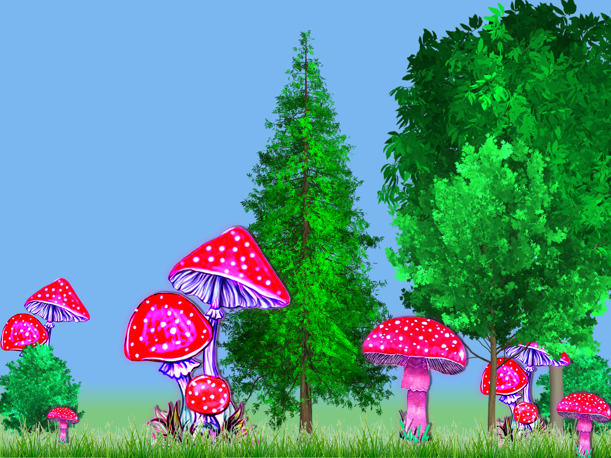
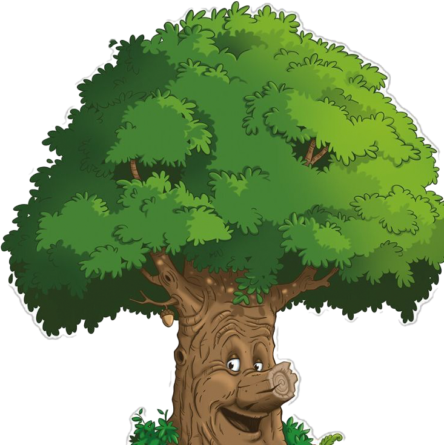
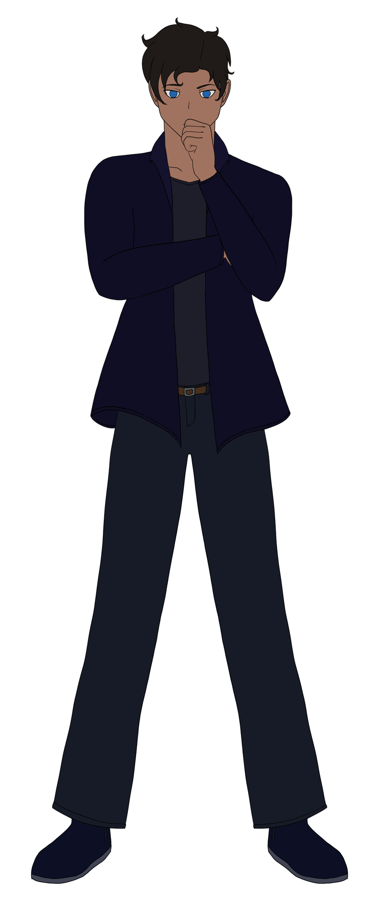
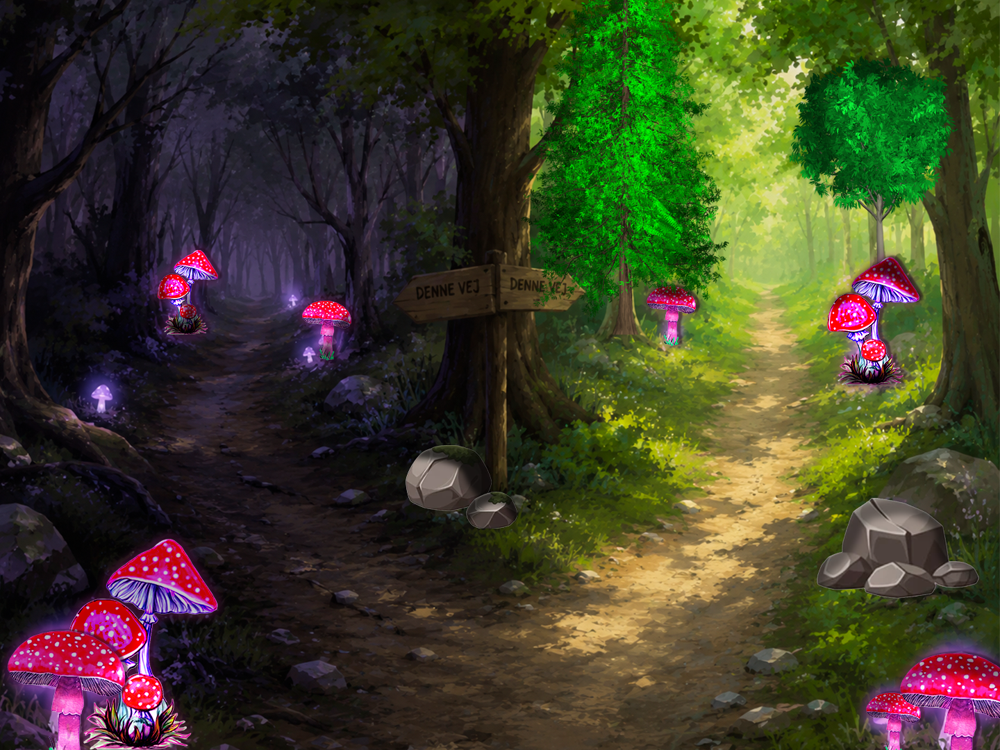
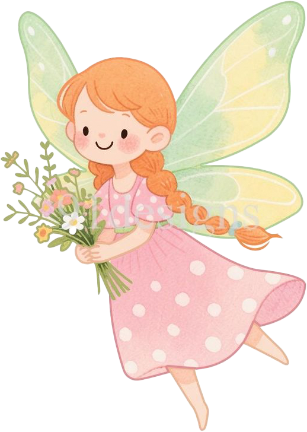
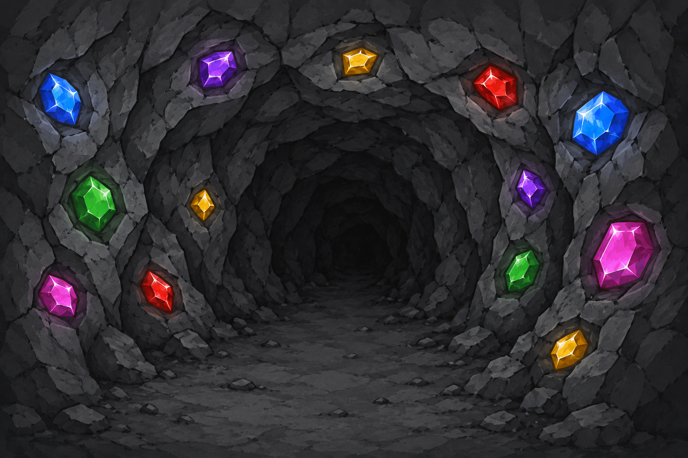
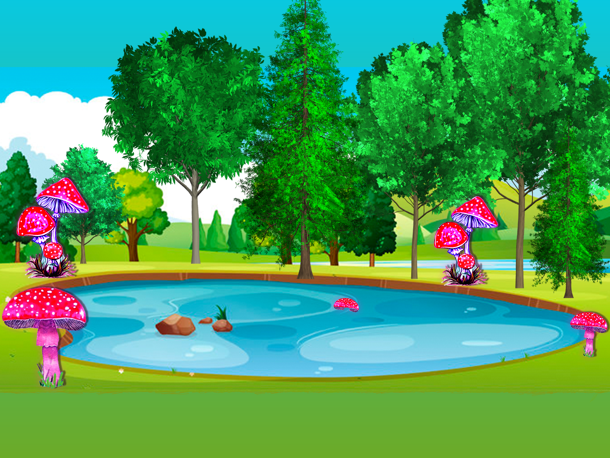
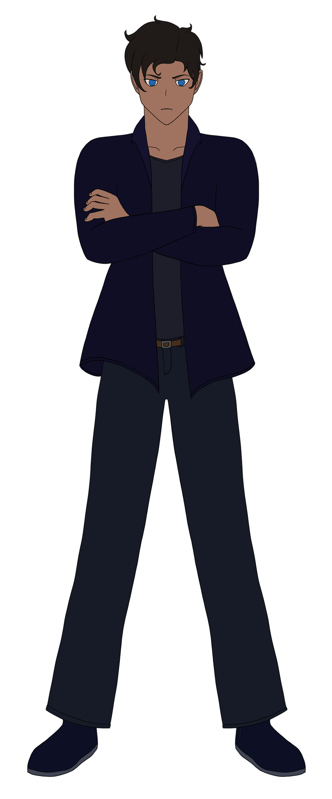
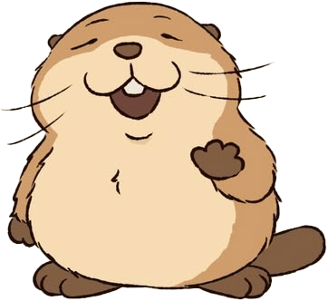
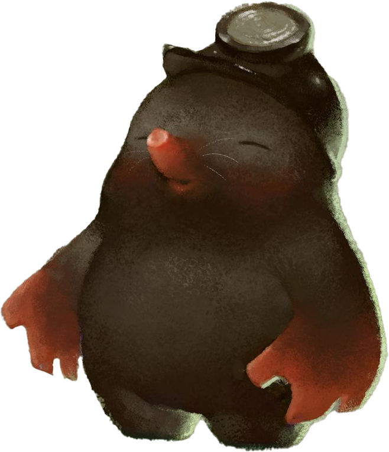
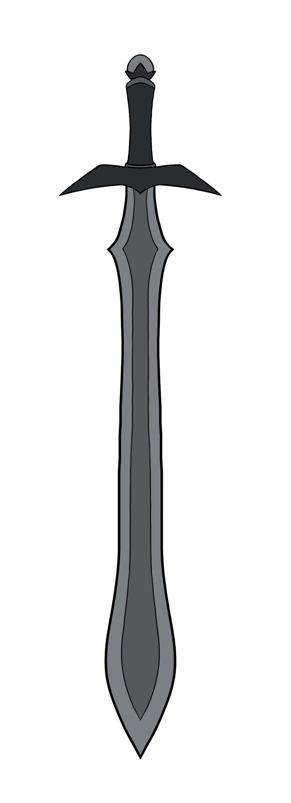
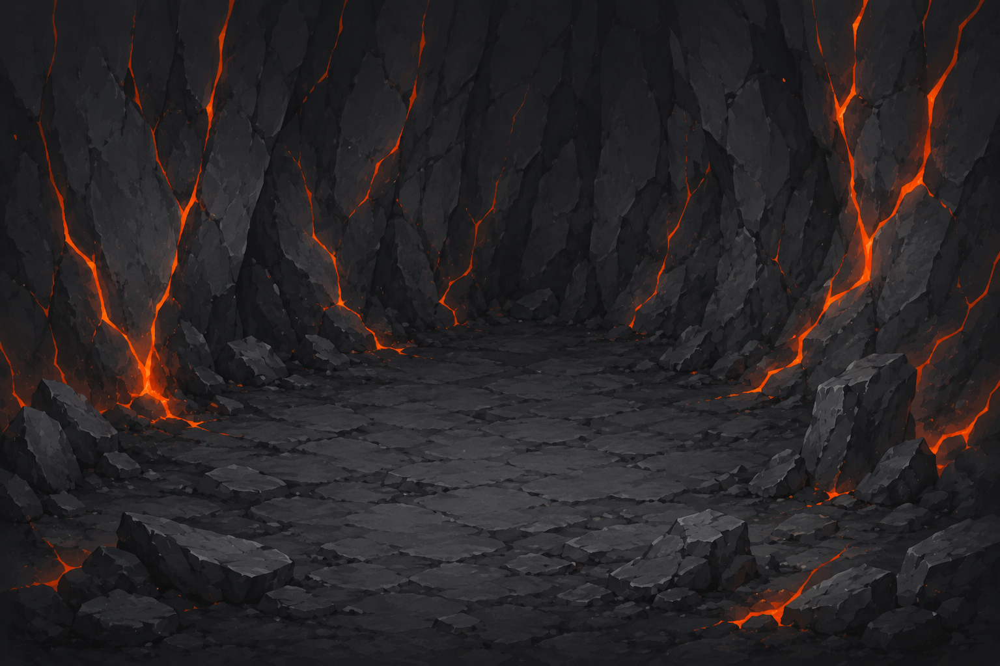
Ending A
Det Magiske Lys
Stødet er øredøvende. Et rent, gnistrende hvidt lys eksploderer ud fra sværdet og skyder gennem rodflettet under hele Yovia på én gang. Kong Fugus rædselsvækkende skikkelse krakelerer og falder til ro i mulden. Ikke dræbt, blot sat i dyb dvale.
Rundt om Xavier vågner de små svampe. Deres syge, neon-grønne glød blegner og erstattes af et varmt skær, som flakkende stearinlys. For første gang ejer de deres egne tanker. De smiler, og snart bryder hele hulen ud i en blid, taknemmelig dans.
Oppe på overfladen springer Feen frem i lyset, og afslører sig endelig som den forsvundne Prinsesse Aleria. Sammen med bævere, ørne og svampe bygger de broer over den nu krystalklare sø.
Det magiske træs stemme blæser som en varm brise over skoven: "Du er ikke bare en rejsende, Xavier. Du er hjertet i vores skov. Du er en del af os."
Ending B
Den Bitre Stilhed
Sten efter sten regner ned over Kong Fugu. Til sidst knuses den gigantiske svamp under tyngden med et øredøvende drøn, og falder sammen i et bjerg af tørre sporer.
Men mørket letter ikke. Uden sværdets hellige magi var der intet til at bryde hjernevasken. De tusindvis af små svampe fryser midt i deres bevægelser. De står som makabre statuer mellem træerne med helt sorte, tomme øjne. Intet lys vender tilbage. Ingen danser.
Bæveren bygger sin dæmning i uendelig stilhed. Birkes sukker tungt i vinden. "Du stoppede mørket, Xavier... men du gav dem ikke lyset tilbage."
Verden snurrer, og Xavier slår øjnene op til lyden af en hylende hjertemonitor. Et skarpt lys fra hospitalets loftrampe skærer i øjnene. Hans kæreste græder og skælder ham ud i én lang køre for at være "dum nok til at falde ned i et hul". Xavier lytter ikke rigtig efter. Han kigger bare op i det hvide loft, og et lille smil bryder frem på hans læber, mens han mindes Yovia.